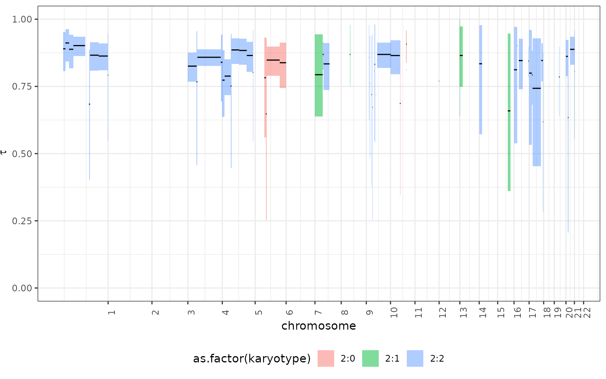

2. Timing Clonal Peaks
a2_Single_segment_timing.RmdThe fit function in the tickTack package
estimates the timing of clonal peaks in cancer genome sequencing data.
This vignette describes the functionality of the fit
function, including input requirements, output, and an example analysis
using the tickTack::pcawg_example dataset.
Overview of the fit Function
The fit function uses either a beta-binomial or binomial
model to fit clonal peaks in sequencing data. It identifies segments of
the genome with specific karyotypes and mutations that meet the input
criteria, then estimates the timing of clonal expansions.
Key Parameters
-
segments: A data frame with segment information, includingchr,from,to,Major, andminor. -
mutations: A data frame with mutation data, includingchr,from,to,DP, andNV. -
purity: Tumor purity as a numeric value. -
possible_k: A character vector of possible karyotypes, defaulting toc("2:1", "2:2", "2:0"). -
alpha: Significance level, defaulting to0.05. -
min_mutations_number: Minimum number of mutations required for analysis, defaulting to2. -
beta_binomial: Logical flag to use the beta-binomial model, default isFALSE. -
beta_binomial_disp: Dispersion parameter for the beta-binomial model, default is0.01.
Analyzing tickTack::pcawg_example
We will use the tickTack::pcawg_example dataset to
demonstrate how to use the fit function.
Input Data
The tickTack::pcawg_example dataset contains three
components:
-
mutations: Mutation data. -
cna: Copy number alterations (CNA). -
metadata: Sample metadata, including tumor purity.
Preview the data:
library(tickTack)
# View example dataset components
mutations <- tickTack::pcawg_example$mutations
cna <- tickTack::pcawg_example$cna
metadata <- tickTack::pcawg_example$metadata
head(mutations)## chr from to ref alt DP NV VAF
## 1 chr1 1015594 1015594 C C 99 16 0.1616162
## 2 chr1 1866371 1866371 C C 250 67 0.2680000
## 3 chr1 1921712 1921712 C C 62 20 0.3225806
## 4 chr1 2049858 2049858 G G 118 15 0.1271186
## 5 chr1 2357842 2357842 C C 84 12 0.1428571
## 6 chr1 2771915 2771915 G G 90 27 0.3000000
## sample
## 1 00db1b95-8ca3-4cc4-bb46-6b8c8019a7c7
## 2 00db1b95-8ca3-4cc4-bb46-6b8c8019a7c7
## 3 00db1b95-8ca3-4cc4-bb46-6b8c8019a7c7
## 4 00db1b95-8ca3-4cc4-bb46-6b8c8019a7c7
## 5 00db1b95-8ca3-4cc4-bb46-6b8c8019a7c7
## 6 00db1b95-8ca3-4cc4-bb46-6b8c8019a7c7
head(cna)## chr from to Major minor CCF total_cn
## 1 chr1 10001 790008 2 2 1.0000000 4
## 2 chr1 790009 13212499 2 2 1.0000000 4
## 3 chr1 13212500 33458785 2 2 1.0000000 4
## 4 chr1 33458786 33564126 2 2 0.1943769 4
## 5 chr1 33564127 56834601 2 2 1.0000000 4
## 6 chr1 56834602 121499999 2 2 1.0000000 4
metadata## sample purity ploidy purity_conf_mad wgd_status
## 1 00db1b95-8ca3-4cc4-bb46-6b8c8019a7c7 0.406 4.082 0.009 wgd
## wgd_uncertain
## 1 FALSERunning the fit function
We can run the fit function on the
tickTack::pcawg_example data to infer the timing of clonal
peaks
# Extract input data
segments <- tickTack::pcawg_example$cna
mutations <- tickTack::pcawg_example$mutations
purity <- tickTack::pcawg_example$metadata$purity
# Run the fit function
results <- fit(
segments = segments,
mutations = mutations,
purity = purity,
possible_k = c("2:1", "2:2", "2:0"),
beta_binomial = TRUE
)Results
The results object contains two components:
inference_results and summarized_results. We
can inspect these to understand the timing of clonal peaks:
# View summarized results
results$summarized_results## # A tibble: 72 × 7
## tau_low tau_mean tau_high segment karyotype chr segment_id
## <dbl> <dbl> <dbl> <int> <chr> <chr> <chr>
## 1 0.809 0.890 0.953 2 2:2 chr1 chr1_790009_13212499
## 2 0.844 0.912 0.962 3 2:2 chr1 chr1_13212500_33458785
## 3 0.820 0.889 0.943 5 2:2 chr1 chr1_33564127_56834601
## 4 0.863 0.902 0.935 6 2:2 chr1 chr1_56834602_121499999
## 5 0.399 0.683 0.891 10 2:2 chr1 chr1_143277461_149255831
## 6 0.806 0.865 0.914 11 2:2 chr1 chr1_149255832_196892499
## 7 0.809 0.863 0.909 12 2:2 chr1 chr1_196892500_247247500
## 8 0.537 0.791 0.947 13 2:2 chr1 chr1_247247501_249250620
## 9 0.768 0.825 0.874 30 2:2 chr4 chr4_74473_48199999
## 10 0.451 0.768 0.954 31 2:2 chr4 chr4_48200000_52699999
## # ℹ 62 more rows
# View detailed inference results
results$inference_results## # A tibble: 1,152,000 × 5
## tau segment karyotype chr segment_id
## <dbl> <int> <chr> <chr> <chr>
## 1 0.918 2 2:2 chr1 chr1_790009_13212499
## 2 0.869 2 2:2 chr1 chr1_790009_13212499
## 3 0.869 2 2:2 chr1 chr1_790009_13212499
## 4 0.887 2 2:2 chr1 chr1_790009_13212499
## 5 0.912 2 2:2 chr1 chr1_790009_13212499
## 6 0.878 2 2:2 chr1 chr1_790009_13212499
## 7 0.935 2 2:2 chr1 chr1_790009_13212499
## 8 0.920 2 2:2 chr1 chr1_790009_13212499
## 9 0.854 2 2:2 chr1 chr1_790009_13212499
## 10 0.832 2 2:2 chr1 chr1_790009_13212499
## # ℹ 1,151,990 more rowsVisulizing the output
The results can be viewed is genome-wise perspective using the
tickTack::plot_timing function
tickTack::plot_timing(results, segments, colour_by = "karyotype")## ✔ Loading CNAqc, 'Copy Number Alteration quality check'. Support : <https://caravagn.github.io/CNAqc/>